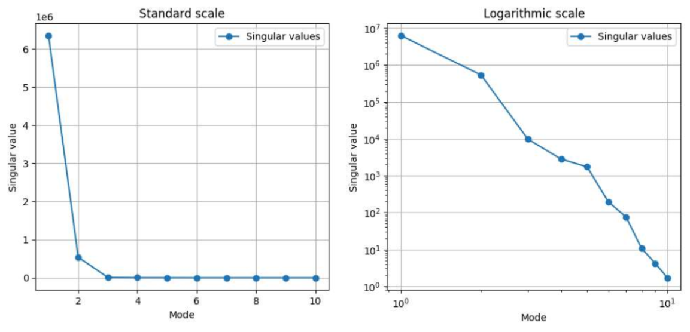
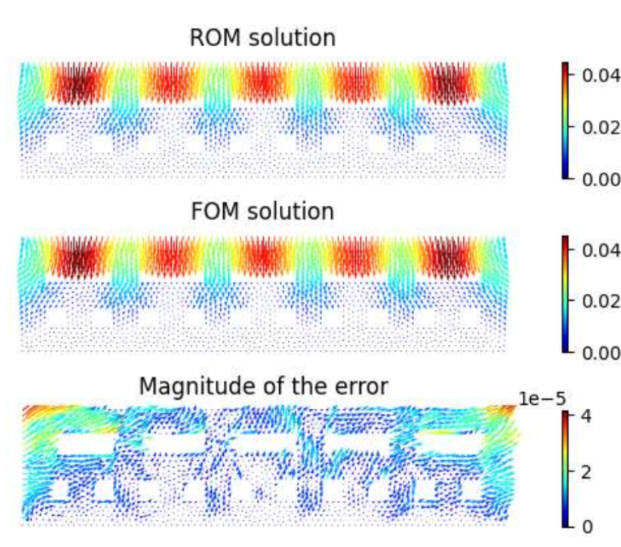

Playground Safety: Material Design (ROM)

Project Overview
This project leverages Model Order Reduction (MOR) techniques and Deep Learning to rapidly evaluate the safety of playground floor structures. A full-order Finite Element (FE) model was developed in FEniCS to compute the static structural displacement of an elastic pad with complex internal void structures (rectangular cutouts) subjected to an external load.
Main Requirements & Tasks
- Full Order Model (FOM): Formulate the linear elasticity variational problem evaluating the deformation given variable material parameters like density (
rho), Lamé parameters (lambda,mu), and external mass load. - Data Generation: Compute and collect high-fidelity spatial snapshots using a fine FE mesh (via FEniCS) for numerous parameter configurations to generate a robust training dataset.
- Surrogate Modeling: Train data-driven Reduced Order Models, such as POD-NN and DL-ROM, to bypass computationally expensive FE solves and predict the displacement field in real-time.
What Was Done
I successfully defined the parametric static structural problem and solved it using the FEniCS framework to build a rich dataset of displacement snapshots. I then mapped the parameter space directly to the reduced latent space using Neural Networks.

The resulting surrogate models (POD-NN and DL-ROM) achieved excellent relative error metrics on unseen test configurations, enabling nearly instantaneous evaluation of the playground pad's safety margin under various loads and material stiffness choices.

